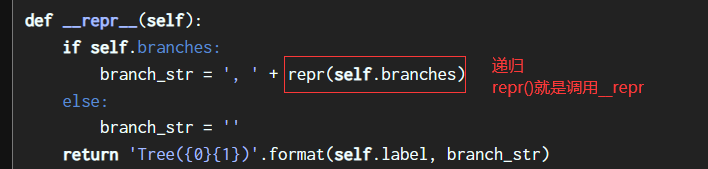
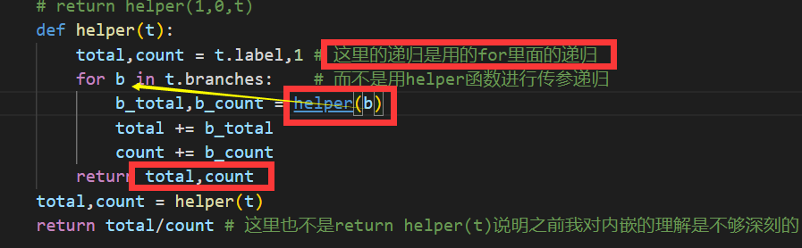
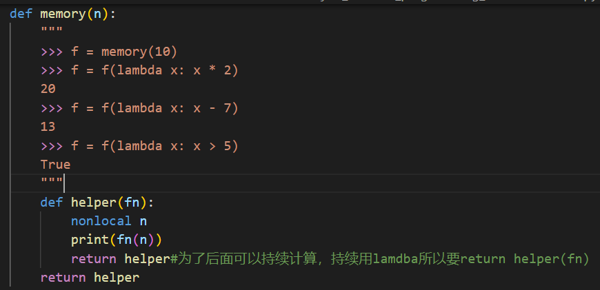
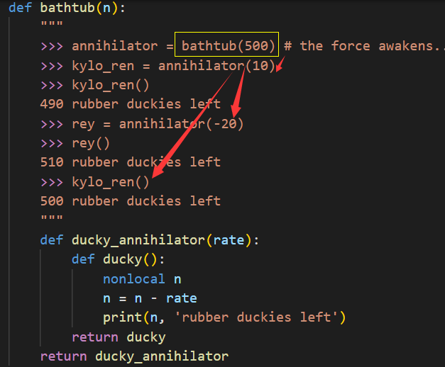
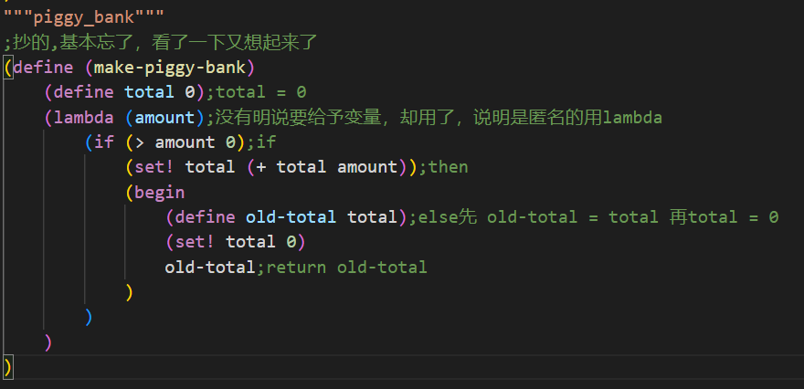

Disc09_18su
BST搜索二叉树
BST---binary_search_trees--2branches_only,left_dece&right_incre
新的左<=左之max；新的右>右之max
__repr__和__str__
如果重写str或repr,在python交互模式下，优先repr;
非交互而是执行如'print'，优先str，没有则repr也可以
这里的lab我不做了，ok用不了，import手动太麻烦也找不到了，过了吧
继续往下走
见识一下在for里的递归，将i作为函数的变量
计算器的真实函数
永远都再被等待下一个输入，自己return自己，是真的秀，不过计算机就是这样 交互
封装进去了 scheme
新定义的用define-name-value,已出现的改值得用set!-name-value